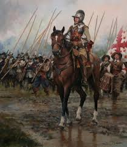

En esta sección, se explora el vasto imperio colonial establecido por España en América, Asia y África. Puede incluir detalles sobre la exploración, la colonización, el intercambio cultural y económico, así como los desafíos y conflictos que enfrentó el imperio.
El Imperio Español fue una vasta dominación territorial establecida por España en los siglos XVI y XVII. Incluyó partes de América, Asia, África y Europa.
Fue una red de colonias, territorios y posesiones bajo la autoridad del rey español. Durante este período, España desempeñó un papel crucial en la exploración y colonización del Nuevo Mundo, llevando consigo el idioma español, la religión católica y la cultura europea.
Este imperio fue uno de los más extensos de la historia, pero también enfrentó desafíos como conflictos con otras potencias europeas y la resistencia de las poblaciones indígenas en las colonias. A pesar de su grandeza, el Imperio Español eventualmente decayó debido a factores económicos y políticos, marcando el fin de una era en la historia mundial.